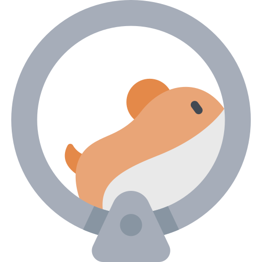
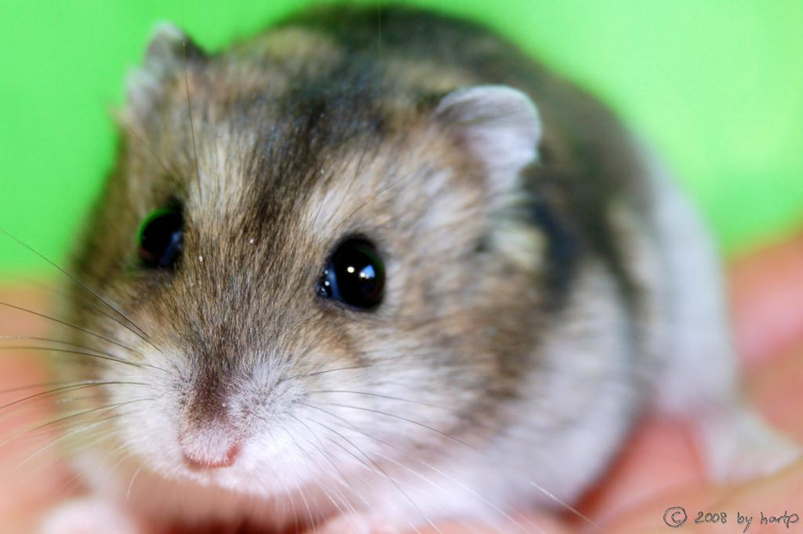
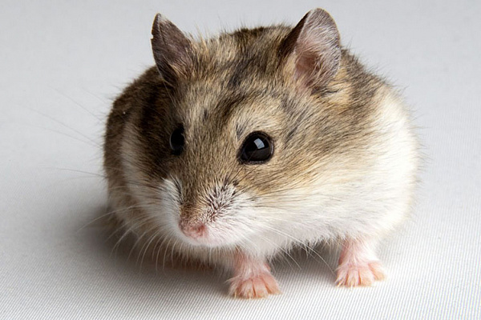

Хомяк Джунгарик
Cледующим моим питомцем был хомяк. Его мне подарили в честь выпускного после 4ого класса и за хорошую учёбу. Я долго выбирала ему имя, меняя почти каждый день. Но папе было плевать и он постояно называл его Джунгарик (потому что порода джунгарский хомячок) и постепенно его стали так называть все, включая меня.
К сожалению, у меня нет фотографий моего Джунгарика, но я нашла его породу в интернете. На самом деле, я его немного боялась. Он как-то укусил моего папу, да и я очень чувствительна к прикосновениям.
Примерно через год я проснулась очередным утром и обнаружила пустую открытую клетку. Родители сказали мне, что он сбежал. И только в 18 лет я узнала, что он на самом деле умер :(
После него у меня не было питомцев, но....